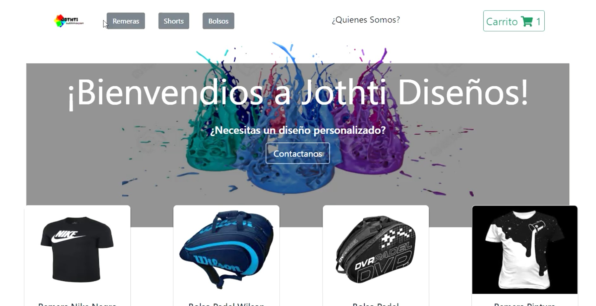
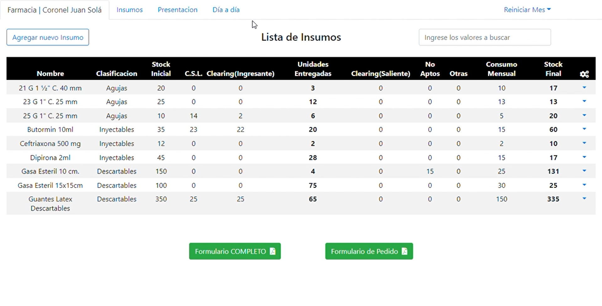
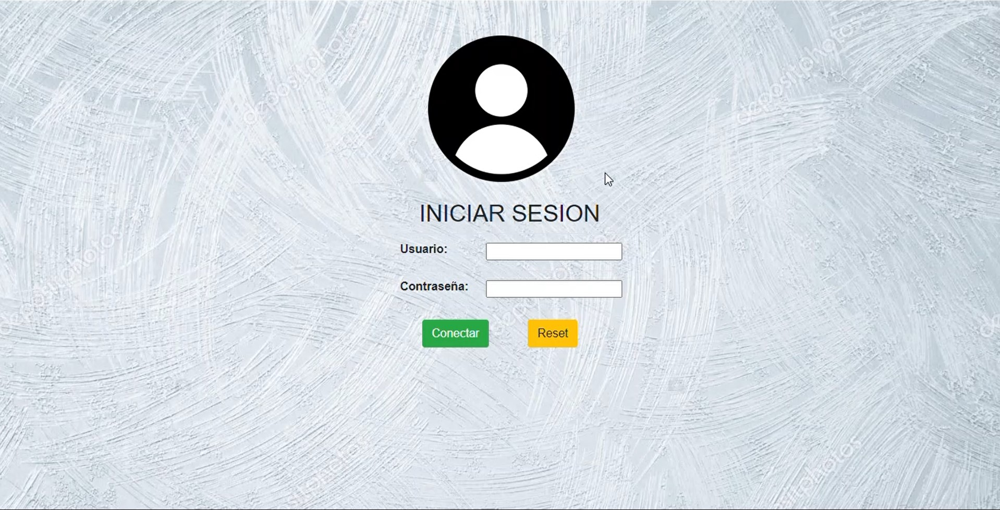
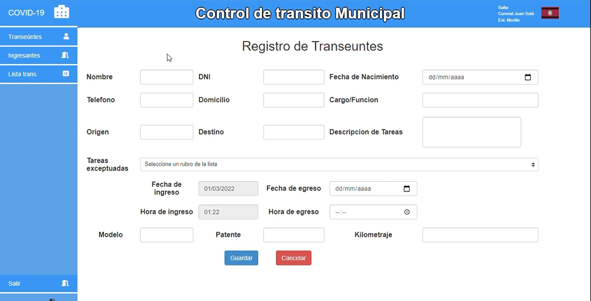
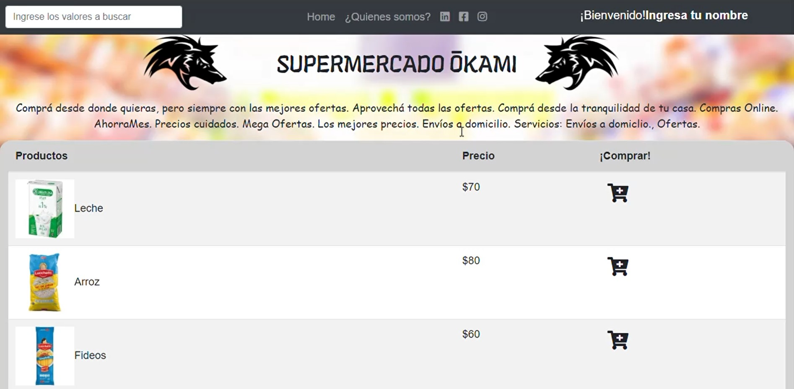
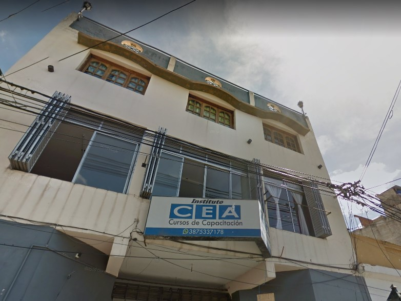

Jothti Design
Mi primer aplicación creada con la tecnología de React, a modo de proyecto final en el curso, impartido por CoderHouse Esta tienda se creo con el fin de comercializar prendas y otros accesorios varios de interés deportivo, además de proporcionar contactos para la personalización a gusto del cliente, orientado en una empresa para la que trabaje, en el area de diseño grafico.
Tecnologías:Farmacia / Hospital Morillo
Aplicacion para Control de Stock. Este proyecto fue desarrollado con el fin de llevar un control exacto de insumos en farmacia del hospital de Morillo, instalado en un servidor local con el sistema de gestion Xampp, con bases de datos MySQL y servidor Apache. Creado en Julio del 2020, como uno de los primeros proyectos trabajando como freelance..
Tecnologías:Instituto C.E.A.
Aplicacion para el Control de alumnos, profesores, cursos y aranceles. Aplicativo local orientado en el control exacto de profesores, cursos a impartir, alumnos y los aranceles por alumno. Desarrollado a finales del 2019 ,a modo de proyecto final, debia buscar una entidad a la que pudiera aplicar los conocimientos adquiridos de programacion, analisis y documentacion. Como primer proyecto desarrollado por completo, soy consciente de que le faltan pulir muchas cosas. Originalmente el proyecto lo inicie con dos compañeros más, por cuestiones que desconozco, a mitad del tiempo estimado de entrega del proyecto, tuve que continuar solo y recortar los objetivos primeramente planteados, a objetivos con los que pueda cumplir con la entrega final.
Tecnologías:Control de transeúntes / Coronel Juan Solá
Aplicacion para el Control de transito municipal. A modo de colaboracion, este proyecto fue desarrollado con el fin de llevar un control total del ingreso y egreso de transeuntes con sus respectivos vehiculos, desarrollado con php, mysql, js, a principios de la pandemia causada por el COVID-19.
Tecnologías:Supermercado Ōkami
Ecommerce. Mi primer aplicación creada con JavaScript, Este eCommerce fue creado imaginando un supermercado oriental, o por lo menos le quise dar esa tematica por mas que los productos que se vean no ajusticien este fin. Es la primera vez que use Javascript en su mayoria para el desarrollo de una app web, la fecha en la que cree esta app es en 2021-02, cuando estuve realizando el curso impartido por los chicos de CoderHouse
Tecnologías:PHP
HTML
CSS
JavaScript

Python
React.js

MySQL
Bootstrap

Node.js
Full-stack Developer
INFOCONTROL | 2022-ActualidadActualmente, cuento con diferentes roles, como programador, en la creación de nuevos módulos, soporte y refactorización, trabajando con tecnologías como Codeigniter, MySQL, Git y demás orientadas el desarrollo web colaborativo. Como Analista de Requerimientos, en la validación de solicitudes de desarrollo o mantenimiento, proporcionando documentación o guías para los desarrolladores, brindando una base sólida y coherente para la implementación correcta. También como Administrador de despliegue, enfocado en validar el código y su correspondiente subida a producción; y en integraciones o muestras varias.
Full-stack Developer
Big apps | 2022Desarrollador
Farmacia | Hospital Morillo | 2020Desarrollando un aplicativo web, enfocado en el control exhaustivo de insumos farmaceuticos, automatizando calculos de insumos necesarios mensualmente de acuerdo al criterio profesional. ¡Ver mas sobre el proyecto!
Secretario Administrativo Informático
 Legislatura de la Provincia de Salta | 2020-2021
Legislatura de la Provincia de Salta | 2020-2021
Como secretario administrativo a cargo de los equipos informaticos y asesorar a compañeros de oficina. Como tareas principales: Informatizar documentos fisicos. Capacitar staff. Redactar Notas y Proyectos. Realizar mantenimiento a las computadoras. Control de padrones. Tareas varias.
Desarrollador
 Instituto C.E.A. | 2018-2019Desarrollando un aplicativo web, con el cual el usuario tendria la facilidad de controlar, gestionar y crear los aranceles deseados para los alumnos de la institucion. A modo de Proyecto final para la carrera de Tec. Analista en Sistemas ¡Ver mas sobre el proyecto!